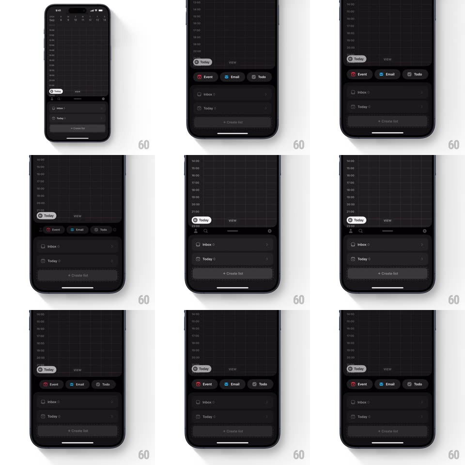

Media
Frame-by-frame

Rebuild this interaction 1:1: Amie's quick-action dock morph - the compact bottom dock springs open into a wide row of three actions (Event in red, Email in blue, Todo in neutral), then collapses back into the slim dock with springy physics.

Rebuild this interaction 1:1: Amie's quick-action dock morph - the compact bottom dock springs open into a wide row of three actions (Event in red, Email in blue, Todo in neutral), then collapses back into the slim dock with springy physics. ## Integration Integration: stack-agnostic spec - springs given as stiffness/damping, timed motions as duration + curve; map every value to your framework and animation library of choice. ## Scene Dark calendar with the slim bottom panel (Inbox, Today, + Create list). Expanded: a row of three rounded chips above the panel - red "Event", blue "Email", gray "Todo" - each with its icon. ## Motion spec Pattern: springy dock-to-actions expansion. - Tap the dock's action zone: the panel's top edge lifts and three chips bloom out of it (scale 0.5 -> 1 with spring ~380/16 - visible overshoot), staggered left-to-right 60ms apart. - The chips' labels fade in slightly after their shapes land (100ms) - form first, text second. - The rest of the panel dims 30% while actions are open; the calendar behind is untouched. - Tap an action: the chosen chip pulses (scale 1.08, 150ms), the other two collapse back into the panel (spring ~400/24), and the flow for that type begins. - Tap elsewhere: all three chips sink back into the panel in reverse stagger, the panel's edge settling flat. ## Calibration - Event is red, Email is blue, Todo is neutral - the color coding matches the rest of the app. - The bloom is fast (full expansion under 400ms) - quick actions must feel quick. ## Reduced motion Chips fade in a row; no overshoot. ## Don't miss - The chips emerge FROM the panel's surface - one material, three extrusions, not a floating menu. - The stagger direction (left to right) matches reading order; reversing it feels broken.